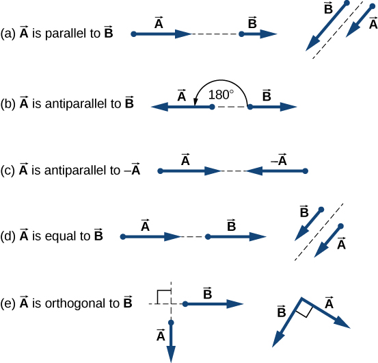
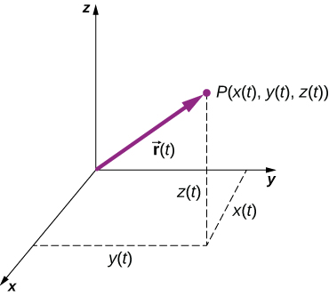
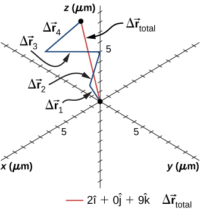

🧭 Week 2 — Vectors & 2D Motion
(Fully Illustrated — Tiered Mastery Edition)
This module teaches you everything you need about vectors, components, 2D motion, projectiles, and relative velocity — even if you missed class.
Every section includes:
- Core Idea (must-know)
- Deeper Reasoning (why it works)
- Advanced Application (real physics + calculus)
- Illustrations from your textbook
- Concept Checks
- Examples & Practice
⭐ 0. HOW TO USE THIS MODULE
Click to expand
What this module gives you:
- Complete lesson on Vectors + 2D Motion
- Diagrams from your uploaded Chapters 2 and 4
- Beginner-friendly explanations
- Practice with hidden answers
- Scaffolding from intuition → mastery
How to learn efficiently:
- Expand each collapsible section
- Do concept checks BEFORE revealing solutions
- Work practice problems on paper first
- Review the summary sheet before the quiz
⭐ 1. WHAT IS A VECTOR?
1.1 Understanding Vectors (Core → Deeper → Advanced)
=== "Core Idea" A vector has both: - magnitude (how much) - direction (which way)
Common vectors:
- displacement
- velocity
- acceleration
- force

=== "Deeper Reasoning"
Scalars answer “how much?”.
Vectors answer “how much + which direction?” — direction changes physics.
A 10 N push north ≠ a 10 N push east.
=== "Advanced Application" Component form:
Unit vector form:
Magnitude:
Direction:
⭐ 2. WHY VECTOR COMPONENTS MATTER
2.1 Components (Core → Deeper → Advanced)
=== "Core Idea" Any vector can be broken into horizontal and vertical parts:

=== "Deeper Reasoning" The key idea:
A 2D motion problem is really just two separate 1D problems happening at the same time.
- Gravity affects only vertical motion
- Horizontal motion is independent
- Calculus and kinematics become easy in components
=== "Advanced Application" Example:
A \(12\text{ m}\) vector at \(60^\circ\):
⭐ 3. VECTOR ADDITION & SUBTRACTION
3.1 Adding and Subtracting Vectors
=== "Core Idea" Add vectors component-wise:
Geometric version (tip-to-tail):

=== "Deeper Reasoning" The geometric and algebraic methods give identical results.
Subtraction:
=== "Advanced Application" Example:
⭐ 4. DOT PRODUCT (MEASURES ALIGNMENT)
4.1 Dot Product (Core → Deeper → Advanced)
=== "Core Idea" Component definition:
Geometric definition:

=== "Deeper Reasoning" Dot product tells you how aligned two vectors are:
- positive → same direction
- zero → perpendicular
- negative → opposite
=== "Advanced Application" Angle between vectors:
⭐ 5. MOTION IN TWO DIMENSIONS
5.1 Independence of x- and y-motion
=== "Core Idea" Key principle:
- Horizontal and vertical motions are independent
- Time links them
- Gravity affects only vertical direction

=== "Deeper Reasoning" Physics becomes simple when you realize:
- The x-motion behaves like constant velocity
- The y-motion behaves like free fall
- Combine the motions → you get a parabola
=== "Advanced Application" Break initial velocity into components:
⭐ 6. PROJECTILE MOTION
6.1 Full Projectile Motion Model
=== "Core Idea" Horizontal motion:
Vertical motion:

=== "Deeper Reasoning" The path is a parabola because:
- Horizontal: constant velocity
- Vertical: constant acceleration
Eliminating \(t\) gives:
=== "Advanced Application" Time of flight:
Range:
Maximum height:
⭐ 7. RELATIVE VELOCITY
7.1 Motion from Different Reference Frames
=== "Core Idea" Relative velocity formula:

=== "Deeper Reasoning" Situations using relative velocity:
- boats in current
- planes in wind
- cars passing
- walking on a moving walkway
=== "Advanced Application" Example:
Plane: \(80\text{ m/s}\) north
Wind: \(30\text{ m/s}\) east
⭐ 8. WORKED EXAMPLES
Example 1 — Vector Components
10 m vector at 30°:
Example 2 — Projectile Launched at Angle
Launch at 20 m/s, 40°:
Example 3 — Relative Velocity
Car A: 30 m/s east
Car B: 20 m/s west
⭐ 9. PRACTICE PROBLEMS
Try these before revealing answers
1. Components of a 25 m vector at 53°.
2. Launch at 15 m/s, 30°. Find flight time.
3. Boat east 4 m/s, current north 3 m/s. Resultant speed?
4. \(\vec{A}=\langle2,3\rangle\), \(\vec{B}=\langle-1,4\rangle\). Find \(\vec{A}+\vec{B}\).
5. Ball thrown horizontally at 8 m/s from 12 m high. Range?
Solutions
-
[ A_x=25\cos53^\circ\approx15 ] [ A_y=25\sin53^\circ\approx20 ]
-
\[ T=\frac{2v_{0y}}{g}=\frac{2(15\sin30^\circ)}{9.8}=1.53\text{ s} \]
-
\[ |\vec{v}|=\sqrt{4^2+3^2}=5\text{ m/s} \]
-
\[ \langle2,3\rangle+\langle-1,4\rangle=\langle1,7\rangle \]
-
[ t=\sqrt{\frac{2h}{g}}=\sqrt{\frac{24}{9.8}}=1.56\text{ s} ] [ x=vt=8(1.56)=12.5\text{ m} ]